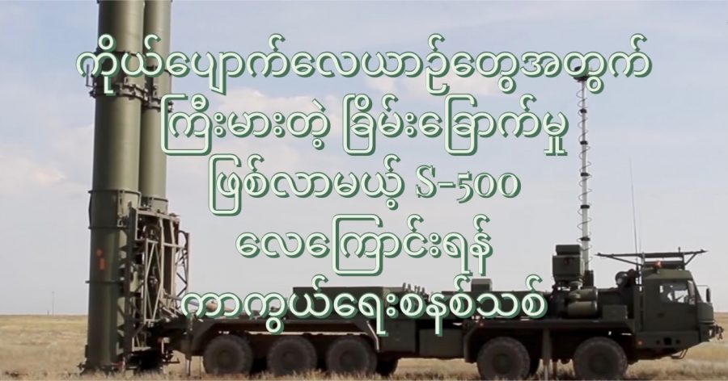

ရုရှားကာကွယ်ရေး ဝန်ကြီးဌာနဟာ S-500 လေကြောင်းရန် ကာကွယ်ရေး စနစ်သစ်တွေ ဝယ်ယူဖို့အတွက် စာချုပ်ချုပ်ဆိုလိုက်ပြီလို့ ကြေငြာချက် ထုတ်ပြန်ခဲ့ပါတယ်။ ဒီကန်ထရိုက်စာချုပ်ဟာ နှစ်အတော်ကြာ နှောင့်နှေးကြန့်ကြာ နေခဲ့ပြီးမှ နောက်ဆုံး ချုပ်ဆိုဖြစ်ခဲ့တာ ဖြစ်ပါတယ်။
ရုရှား ကာကွယ်ရေး ဌာနမှ ရုရှား တတ်စ် သတင်းဌာနကို ပြောကြားရာမှာ ဒီ S-500 လေကြောင်းရန် ကာကွယ်ရေး စနစ်တွေဟာ နောက်နှစ် ထဲလောက်ကို စတင်ပြီး တာဝန်ထမ်းဆောင်နိုင် လိမ့်မယ်လို့ ဆိုပါတယ်။ လက်ရှိမှာ ရုရှားကာကွယ်ရေး ဝန်ကြီးဌာနက စုစုပေါင်း S-500 ကာကွယ်ရေး စနစ် ၁၀ ခုကို မှာကြားထားတယ်လို့ ဆိုပါတယ်။ ပထမဆုံး အသုတ်ကို လာမယ့် ၂၀၂၂ ခုနှစ် နှစ်ဆန်းပိုင်းလောက်မှာ စတင်လက်ခံ ရရှိလိမ့်မယ်လို့ ပြောပါတယ်။ လက်ရှိအချိန်မှာ ဒီ S-500 လေကြောင်းရန် ကာကွယ်ရေး စနစ်တွေကို ရုရှနိုင်ငံ တောင်ပိုင်းက လက်နက် စမ်းသပ်ကွင်းတွေမှာ ကာကွယ်ရေး ဝန်ကြီးဌာနက စမ်းသပ်နေတယ်လို့ သူက ဆက်ပြောပါတယ်။ ဒီစမ်းသပ်မှုတွေကို ဒီနှစ်ကုန် ပိုင်းလောက်မှာ အပြီးအစီး ပြုလုပ်နိုင်မယ်လို့ မျှော်လင့်ထားပါတယ်။
လက်ရှိ စမ်းသပ်နေတဲ့ S-500 လေကြောင်းရန် ကာကွယ်ရေး စနစ်တွေဟာ မြေပြင်အခြေစိုက် စနစ်တွေ ဖြစ်ကြပါတယ်။ ရေတပ် သင်္ဘောတွေပေါ် တပ်ဆင်နိုင်မယ့် စနစ်ကိုလဲ ထုတ်ထုတ်ဖို့ ရည်မှန်းထားတယ်လို့ ဆိုပါတယ်။ သင်္ဘောတင် စနစ်တွေက သိပ်တော့ အထူးအဆန်း မဟုတ်ပါဘူး။ ရုရှားက အရင် S-300 နဲ့ S-400 စနစ်တွေ တုန်းကလဲ ရေတပ်အတွက် စနစ်တွေ ထုတ်လုပ်ခဲ့ပါတယ်။
ရုရှား တတ်စ် သတင်းဌာနက သတင်းနဲ့ ပါတ်သက်လို့ ရုရှားကာကွယ်ရေး ဝန်ကြီးဌာနကတော့ သဘောထား မှတ်ချက် တစ်စုံတစ်ရာ ပေးဖို့ ငြင်းဆိုခဲ့ပါတယ်။ ဒီ S-500 စနစ်ဟာ အရင် ၂၀၁၀ ခုနှစ်တွေလောက်ကတဲက စတင် တီထွင်နေခဲ့တာ ဖြစ်ပြီး ပြဿနာ အမြောက်အများ ကြုံတွေ့ခဲ့ရတာမို့ ခုထက်ထိ နှောင့်နှေးကြံ့ကြာနေတာ ဖြစ်ပါတယ်။ မူလက ၂၀၁၄ ခုနှစ်ကတဲက စတင်ထုတ်လုပ်ဖို့ စီမံကိန်း ဆွဲထားခဲ့တာ ဖြစ်ပေမယ့် နောက်ပိုင် ၂၀၁၇ ကို ရွှေ့ခဲ့ရပါတယ်။ နောက်တခါ ကြံ့ကြာမှုတွေ ထပ်ကြုံလာတာမို့ ၂၀၂၀ ခုနှစ်ကို တခါ ထပ်ရွှေ့ရ ပြန်ပါတယ်။ ပြီးခဲ့တဲ့နှစ် ဒီဇင်ဘာလကတော့ ရုရှားကာကွယ်ရေး ဒုဝန်ကြီးက ဒီလက်နက် စနစ်တွေ ၂၀၂၁ ဒီနှစ်ထဲမှာ စတင်တာဝန် ထမ်းဆောင်နိုင်တော့မယ်လို့ ပြောထားပြီး အခုတခါ ၂၀၂၂ ထဲကို တခါ ထပ်ရွှေ့ပြန်တာပဲ ဖြစ်ပါတယ်။
ဒီလဆန်း တုန်းကတော့ ရုရှားကာကွယ်ရေး ဝန်ကြီးဌာနက S-550 စမ်းသပ်ပစ်ခတ်နေတဲ့ ဗီဒီယိုကို ပထမဆုံး အကြိမ် တင်ပြခဲ့ပါတယ်။ မြန်နှုန်းမြင့် ဒုံးကျည်တစ်ခုကို ပစ်ချ စမ်းသပ်ခဲ့တာ ဖြစ်နိုင်တယ်လို့ ဒီဗီဒီယိုကို လေ့လာပြီး Jane သုတေသန စာစောင်က မှတ်ချက်ပေးခဲ့ပါတယ်။ ဒီဗီဒီယိုမှာ ပါတဲ့ လေယာဉ်ပစ် SAM ဒုံးကျည်တွေဟာ အခုမှ အသစ်စမ်းသပ်ဆဲ ဖြစ်တဲ့ 77N6-N သို့ 77N6-N-1 အမျိုးအစား လေယာဉ်ပစ် ဒုံးကျည်တွေ ဖြစ်နိုင်တယ်လို့ ဆိုပါတယ်။ ဒီ ဒုံးကျည်တွေဟာ S-500 လေကြောင်းရန် ကာကွယ်ရေး စနစ်အတွက် သီးသန့် ထုတ်လုပ်ထားတဲ့ ဒုံးကျည်အမျိုးအစားတွေ ဖြစ်ကြပါတယ်။
ဒီ S-500 လေကြောင်းရန် ကာကွယ်ရေး စနစ်ဟာ ရုရှားတပ်မတော်ရဲ့ အနာဂါတ် လေကြောင်းရန် ကာကွယ်ရေး စနစ်မှာ အဓီက အခန်းက နေရာယူလာမယ့် လေကြောင်းရန် ကာကွယ်ရေး စနစ် ဖြစ်ပါတယ်။ လက်ရှိ အသုံးပြုနေတဲ့ S-400 စနစ်တွေထက် ပိုမိုကောင်းမွန်အောင် ပြုပြင်မှုတွေ ပြုလုပ်ထားပါတယ်။ အသံလွန် (Hypersonic missle) ဒုံးကျည်တွေကိုတောင် ကြားဖြတ်ဟန့်တားနိုင်စွမ်း ရှိမယ်လို့ ဆိုပါတယ်။ (လက်ရှိမှာ ဒီ အသံလွန် ဒုံးကျည်တွေကို ပစ်ချနိုင်တဲ့ လေကြောင်းရန် ကာကွယ်ရေး စနစ် မရှိသေးပါဘူး)။ နောက်ပြီး လူမဲ့ လေယာဉ်တွေနဲ့ အနိမ့်ပျံ သူလျှို ဂြိုလ်တုတွေ ကိုပါ ပစ်ချနိုင်မယ်လို့လဲ ယူဆရပါတယ်။ အသံထက် ၅ ဆကျော် မြန်တဲ့ ပစ်မှတ်တွေကိုပါ ပစ်ချနိုင်အောင် ဒီဇိုင်းထုတ် ထားတယ်လို့ သတင်းတွေအရ သိရပါတယ်။
ဒီ S-500 စနစ်ဟာ ကီလိုမီတာ ၆၀၀ အတွင်းက ဒုံးကျည်တွေကို ဟန့်တားနိုင်ပြီး ကီလိုမီတာ ၅၀၀ အတွင်းက ဘယ်လို လေကြောင်း ပစ်မှတ်မျိုးကို မဆို ပစ်ချနိုင်စွမ်း ရှိပါတယ်။ လေကြောင်းပစ်မှတ် ၁၀ ခုကို တစ်ပြိုင်နက် ချိန်ရွယ်ပစ်ခတ်နိုင်စွမ်း ရှိမှာ ဖြစ်ပါတယ်။ ဒါဟာ အကာအဝေးအရရော ပစ်မှတ် ရှာဖွေ ထိန်းချုပ်နိုင် စွမ်းမှာရော S-400 ထက် ပိုမို သာလွန်တဲ့ စွမ်းဆောင်ရည် ဖြစ်ပါတယ်။
S-500 ရဲ့ အသံလွန် ပစ်မှတ်တွေ ပစ်ခတ်နိုင် စွမ်းအပြင် နောက်ထပ် အရေးကြီးတဲ့ စွမ်းဆောင်ရည် တစ်ခုကတော့ ကိုယ်ပျောက်လေယာဉ်တွေကို ရှာဖွေ ခြေမှုန်းနိုင်တဲ့ စွမ်းရည် ပါဝင်လာတာပဲ ဖြစ်ပါတယ်။ ရုရှား ကာကွယ်ရေး ဝန်ကြီး ဌာနက ပုဂ္ဂိုလ်တွေနဲ့ ထုတ်လုပ်တဲ့ ကုမ္ပဏီက သူတွေကတော့ ဒီ S-500 စနစ်ဟာ အမေရီကန်ရဲ့ F35 နဲ့ F22 တို့လို ကိုယ်ပျောက် တိုက်လေယာဉ်တွေကို ချမှုန်းမယ့် “ငွေကျည်ဆံ” လို့ တင်စားပြောနေ ကြပါတယ်။
“ကျွန်တော်တို့ရဲ့ လေကြောင်းရန် ကာကွယ်ရေး စနစ်က အမေရီကန်ရဲ့ ကိုယ်ပျောက်လေယာဉ် စနစ်ရဲ့ အားသာချက်တွေကို ချေဖျက်ပေးမှာ ဖြစ်ပါတယ်။ ကျွန်တော်တို့ရဲ့ စနစ်က အမေရိကန် ကိုယ်ပျောက်လေယာဉ်တွေကို ဟန့်တားနိုင်စွမ်း ရှိမှာ ဖြစ်တဲ့ အပြင် လက်ရှိ အမေရိကန်နဲ့ မဟာမိတ်တွေရဲ့ လေကြောင်းရန် ကာကွယ်ရေး စနစ်တွေ အားလုံးထက်လက် အဆများစွာ သာလွန်ပါတယ်” လို့ ဒီစနစ် ထုတ်လုပ်တဲ့ ကုမ္ပဏီက အင်ဂျင်နီယာချုပ် ပါဗဲလ် ဆိုဇီနော့ဗ် က ပြောပါတယ်။
အခုထိတော့ ဒီ S-500 စနစ် ဘယ်နှစ်ခု ကို ရုရှားလေကြောင်းရန် ကာကွယ်ရေး စနစ်အတွင်း တပ်ဆင်အသုံးပြုမလဲ ဆိုတာကို မသိရ သေးပါဘူး။ နောက်ပြီး ဒီစနစ်တွေကို အချိန်တိုအတွင်းမှာ လုံလုံလောက်လောက် အမြောက်အများ ထုတ်လုပ် ပေးနိုင်စွမ်း ရှိမရှိ ဆိုတာကိုလဲ မသိရ သေးပါဘူး ခင်ဗျာ။
Reference: Russia’s S-500: A Silver Bullet Against American Missiles and Fighters?
ကိုယ်ပျောက်လေယာဉ်တွေအတွက် ကြီးမားတဲ့ ခြိမ်းခြောက်မှု ဖြစ်လာနိုင်တဲ့ S-500 လေကြောင်းရန် ကာကွယ်ရေးစနစ်သစ်

August 2, 2021
Other Posts
- အမေဇုံ မြစ်ဝှမ်းဒေသအတွင်း ပျောက်ဆုံးနေသော ရှေးမြို့ဟောင်း အများအပြား ရှာတွေ့
- ၁၉၀၈ ခုနှစ် ဆိုက်ဘီးရီးယားက ထူးဆန်းတဲ့ ပေါက်ကွဲမှုရဲ့ တရားခံ
- အခြားကမ္ဘာမှ နည်းပညာများအား ရှာဖွေမည့် ဂယ်လီလီယို စီမံကိန်း
- မှိုတွေမှာ ဘာသာစကား ရှိကြောင်း သိပ္ပံ ပညာရှင်များ ရှာဖွေတွေ့ရှိ
- RPG ဘယ်လို အလုပ်လုပ်လဲ
- ဂျိမ်စ်းဝက်ဘ် တယ်လီစကုပ်ကြီး ဥက္ကာခဲ အသေးလေး ထိမှန်
- လူတစ်ယောက် လိမ်တယ် မလိမ်ဘူးဆိုတာ ဘယ်လိုသိနိုင်မလဲ
- နေနှစ်စင်း ထွက်တဲ့ ဂြိုဟ်တွေပေါ်မှာလဲ သက်ရှိတွေ ရှိနိုင်တယ်
- မိုးကြိုးလွှဲ ဘယ်လို အလုပ်လုပ်လဲ
- ကမ္ဘာပြင်ပသက်ရှိများ တွေ့ရှိမှုအတွက် ကြိုတင်ပြင်ဆင်ရန် ဘာသာရေး ပညာရှင်များကို နာဆာ ငှားရမ်း